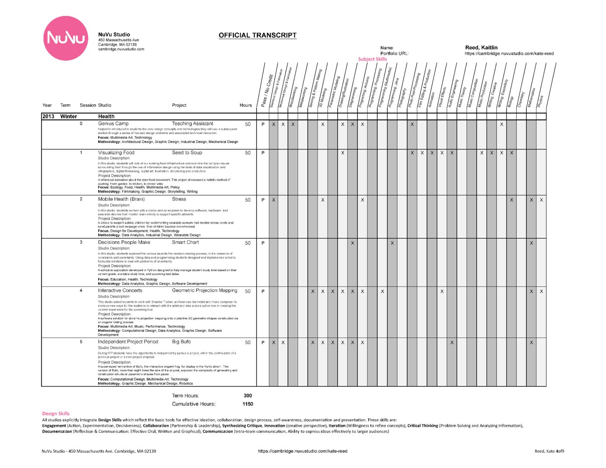
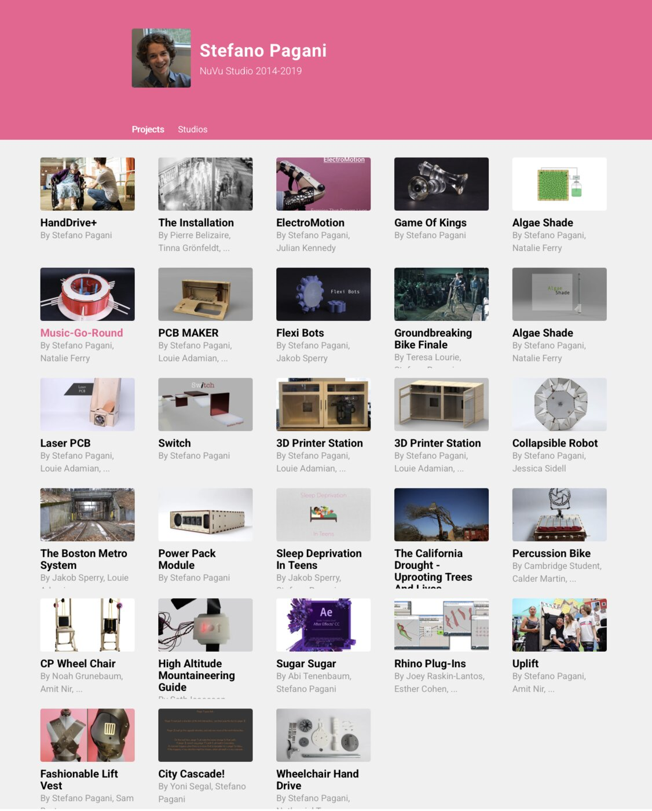
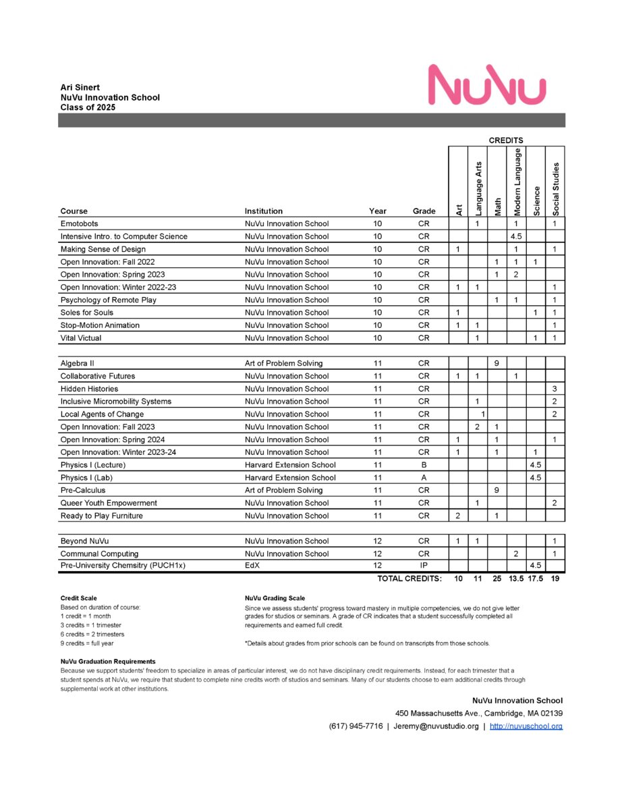
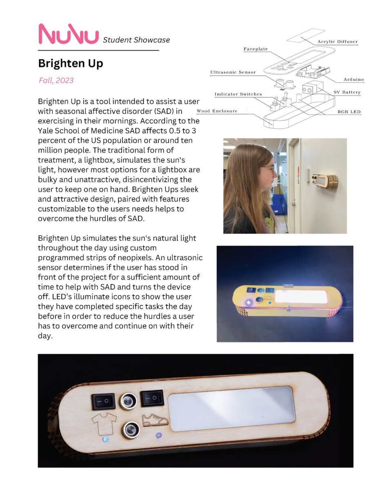

The system wasn't designed all at once. Each iteration responded to real needs, real failures, and real feedback from students, families, faculty, and admissions officers. The design process mirrored NuVu's own pedagogy: iterative, feedback-driven, and deeply collaborative.
Prototype 1 — Handmade Transcript
One student, one document, proof of concept
The first prototype was crafted entirely by hand for NuVu's first full-time student, whose college aspirations required a transcript that was both credible and true to the work. Narratives, projects, and skills were mapped manually — weaving together process documentation, portfolio artifacts, and evidence of growth. Drawing on competency-based models, this transcript reverse-engineered assessment frameworks to reflect NuVu's pedagogy while meeting the expectations of admissions officers.

The handmade transcript — skills matrix, studio descriptions, project documentation, and narrative evaluation on a single document.
Impact: The student was admitted to a dual degree program at Brown + RISD — validating the transcript as a bridge between innovative pedagogy and institutional credibility.
Prototype 2 — LMS Integration
Embedded in the platform, generated per-student
Early transcripts were embedded into the backend of the developing Studio Management System, enabling per-student generation. Rapid development cycles allowed workflow testing, faculty training, and the first integration of pedagogy and assessment as core platform functions. Progress reporting for families and the broader school community began here.
Per-student transcript generation — still evolving the skills framework and narrative structure.

Student portfolio page — every project documented with process, not just product. Work spanning studios, collaborators, and disciplines in a single view.
Impact: Demonstrated scalability beyond handmade solutions. Maintained a 100% college acceptance rate for graduates. Provided a functional prototype for NuVuX consulting partnerships.
Prototype 3 — Full Integration
Bidirectional feedback, student agency, growth tracking
This iteration embedded bidirectional feedback as a core feature of studio practice. Student writing and documentation became central, giving learners full agency in shaping their narratives of growth. Faculty gained deeper development tracking. Shared language and structures began shaping graduation requirements. The transcript and portfolio unified around NuVu's core skills: process, iteration, collaboration, and critique.
The transcript as a learning tool — supporting self-awareness, faculty practice, and clearer communication of achievement.
Final Version — Transcript + SMS Ecosystem
From static record to living infrastructure
The transcript evolved from a standalone document into one layer of a comprehensive Studio Management System — a living ecosystem where teaching, learning, and growth were captured in real time. Where a traditional LMS manages logistics, the SMS made NuVu's design process visible and valued: documentation, iteration, critique, and reflection as first-class activities.

Final transcript — institutional legibility with the nuance of process-based learning.

Portfolio view — documentation, projects, and growth in a navigable record.
Impact: Delivered a scalable, adaptable framework adopted across 7 countries and 7,000+ students. Gave clarity and legitimacy for colleges and employers while preserving the nuance of process-based learning. Positioned NuVu as both a pioneering school and a service provider.